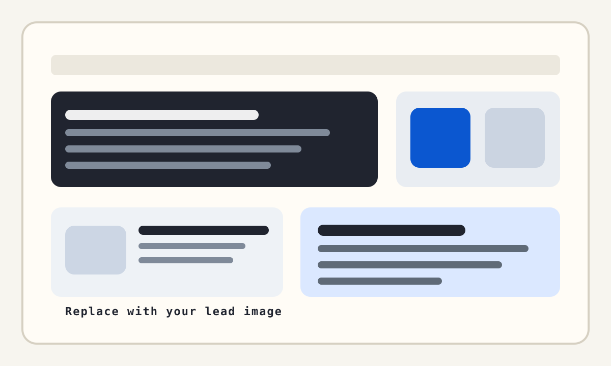
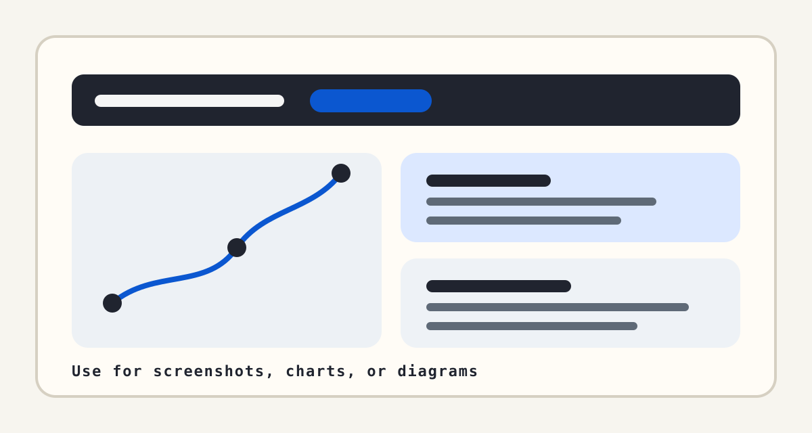

Your Post Title Goes Here
Short quoted note or update. This keeps the same placement and function a short callout can have near the top of a post, but with a quieter gray accent.
Start with a direct opening paragraph. State what happened, what you tested, what you built, or what you learned. The layout here is intentionally plain so the writing does most of the work, which is often the strongest part of a good technical blog format.

From here, continue in simple paragraphs. If you link to hardware, code, repos, or prior articles, the links stay basic and blue instead of using a heavier accent treatment. That is the main intentional deviation in this template.
Section Heading Example
Use headings when the post genuinely changes direction. Good technical blog posts usually alternate between explanation, evidence, and interpretation. That rhythm works especially well in this sort of stripped-down article layout.
- Short bullet lists fit naturally in this format.
- They are most useful for tools, specs, steps, or test conditions.
- Keep them tight so the article still reads like a narrative.

Code Example
Inline code like git status and code blocks keep a neutral gray treatment so they stand apart without borrowing the blue link color.
<figure>
<img src="images/example.jpg" alt="Describe the image" />
<figcaption>Explain why the image matters.</figcaption>
</figure>Small deviation: this light gray note box gives you one extra emphasis tool without moving far away from the overall restraint of the layout.